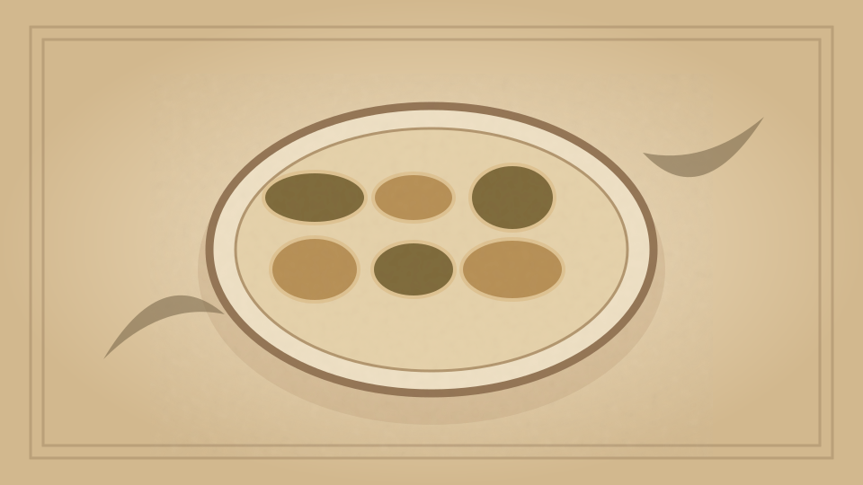

1910 · Fannie Merritt Farmer · SOUP GARNISHINGS AND FORCE-MEATS
Noodles
The Boston Cooking-School Cook Book

Historical Recipe
The following text is extracted from the 1910 edition, retaining historical terminology and quantities.
Original Ingredients & Directions
1 egg
½ teaspoon salt
Flour
Beat egg slightly, add salt, and flour enough to make very stiff dough; knead, toss on slightly floured board, and roll thinly as possible, which may be as thin as paper. Cover with towel, and set aside for twenty minutes; then cut in fancy shapes, using sharp knife or French vegetable cutter; or the thin sheet may be rolled like jelly roll, cut in 148 slices as thinly as possible, and pieces unrolled. Dry, and when needed cook twenty minutes in boiling salted water; drain, and add to soup.
Noodles may be served as a vegetable.
Automatically extracted transcription; editorial verification pending. Historical instructions may not meet modern food-safety standards.